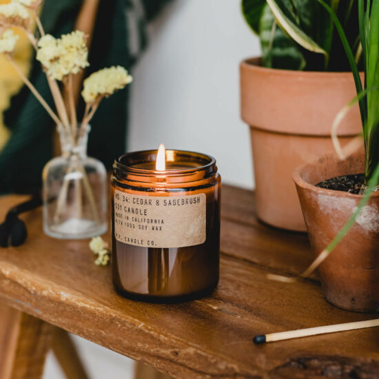

It Takes a Community To Make a Candle
How do you capture the spirit of a memory in a way that feels personal and recognizable to everyone?
That’s the question we ask ourselves every day. Luckily, we’re not the only ones with the answers! We speak to anywhere from 30 to 100 people for every candle we develop, visiting local areas, collecting samples, and even extracting scents from food. We’ve discussed childhood memories with local Texans, why books smell so great with veteran librarians, the flora of Central Park with New York horticulturalists, and the finer points of donuts with Dunkin’ superfans. And that's just the start of our process.
We then try hundreds of different scent combinations, checking back in with the community along the way until we’ve found the perfect balance; an authentic fragrance that will also smell great in your home.
